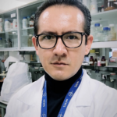
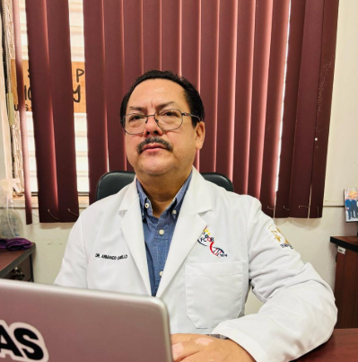
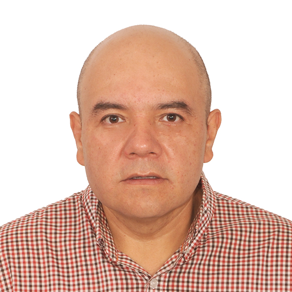
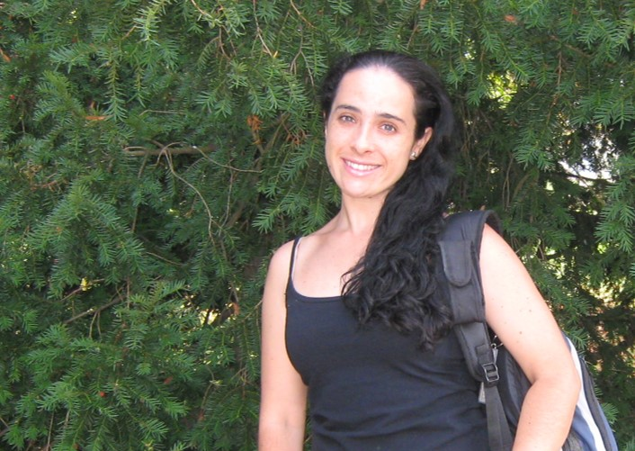
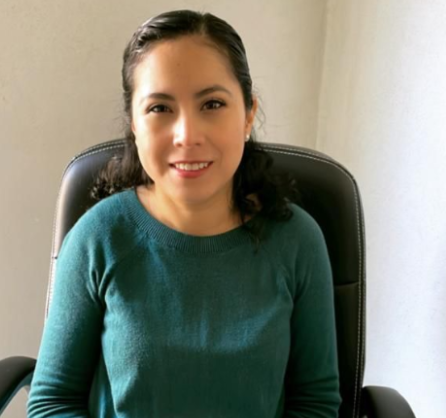

Meet the people behind the Phytochemicals & Nutrition Laboratory at the Universidad Autónoma de Querétaro.
México
Emeritus Professor · Universidad Autónoma de Querétaro
Dr. Elhadi M. Yahia is Emeritus Professor and Senior Scientist at the University of Querétaro, Mexico, where he teaches, conducts research, and supervises graduate students on food security, postharvest technology, food science, and human nutrition. He is also Courtesy Professor at the University of Florida, USA. He has published 25 books in 3 languages and more than 400 scientific and technical articles and book chapters. He served as Agro Industry Officer at the FAO/UN, collaborating on the Global Initiative on Food Loss and Waste Reduction. He has been classified among the top 2% of World Scientists by Stanford University.
Education: B.Sc. – University of Tripoli, Libya · M.Sc. – University of California, Davis · Ph.D. – Cornell University, Ithaca, New York

Education: Ph.D. in Chemical-Biological Sciences (UAQ) · M.Sc. Human Nutrition (UAQ) · Clinical Nutritionist (UAA).
Professor and researcher at the Faculty of Natural Sciences (UAQ). Research focuses on phytochemicals with antitumor and immunogenic activity, and biomarkers in colorectal cancer.
Read more
Research Areas: Identification of phytochemicals with antitumor/immunogenic activity · Study of a recombinant lectin as anticancer biopharmaceutical · Biomarkers in colorectal cancer via instrumental analysis.
Skills: Bioactive compound extraction · Cell culture · Western blot · Flow cytometry · HPLC · Gas chromatography.
Education: Nutrition student at the Universidad Autónoma de San Luis Potosí (UASLP).
Interested in sports nutrition and scientific research. Currently contributing to the laboratory's research activities.

Institution: Universidad Autónoma de Sinaloa (UAS).
Education: Doctorate in Plant Biotechnology (CINVESTAV-IPN) · M.Sc. Fruits & Vegetables (CIAD) · B.Sc. Biochemical Food Engineering.
61 scientific articles, 3 books, 8 book chapters. h-index 22, 1,975+ citations.
Read more
Research: Postharvest technology and physiology · Identification of phenolic compounds and carotenoids · Osmosonic dehydration. Co-editor with Dr. Yahia of Postharvest Physiology and Biochemistry of Fruits and Vegetables (Woodhead, 2019).

Institution: Research Center for Food and Development (CIAD), Chihuahua.
Education: Doctorate – UAQ/CIAD · M.Sc. Food Science (UAQ) · B.Sc. Biochemical Engineering.
Leader of "Natural Pigments" research group (23 researchers, 8 countries). 120+ peer-reviewed papers.
Read more
Winner of the National Award in Food Science and Technology (2018). Associate editor for two scientific journals, reviewer for 47 journals.
ciad.mx profile →
Institution: Research Center for Food and Development (CIAD), Hermosillo, Sonora.
Education: Postdoctoral – USDA, Beltsville MD · Doctorate (Valencia, Spain, 1995) · M.S. ICAS, Mexico · B.S. University of Sonora.
Coordinator of Plant Foods Technologies area at CIAD.
Read more
Research: Fresh-cut vegetable technology · Antioxidants and antimicrobials for fruit quality · Characterization of bioactive compounds in tropical fruits · Shelf-life optimization.

Institution: University of Antioquia, School of Nutrition and Dietetics.
Education: Biologist · Biochemist · M.Sc. Basic Biomedical Sciences · Ph.D. Life and Health Sciences.
Research on natural products for cancer chemoprevention; in vitro/in vivo models and clinical trials.
Read more
Coordinator of Research Group on the Impact of Food Components on Health (UdeA). Former coordinator of PhD in Human Nutrition and Food (2021–2022).

Institution: Universidad Autónoma de San Luis Potosí (UASLP).
Education: Ph.D. Food Science (CIAD, 2016) · M.S. Food Science (CIAD) · B.Sc. Human Nutrition (UAQ).
Sabbatical leave at the Lab of Phytochemicals & Nutrition (UAQ, 2024). Published in high-impact journals. Honorable Mention, National Food Science & Tech Award 2017.
Education: Software Engineering student, Universidad Autónoma de Querétaro (UAQ).
Serving as SNI Level III/Emeritus Researcher Assistant III, providing information technology support and web development for the laboratory website and digital resources.
For research inquiries, collaboration proposals, or media requests, please reach out to us.